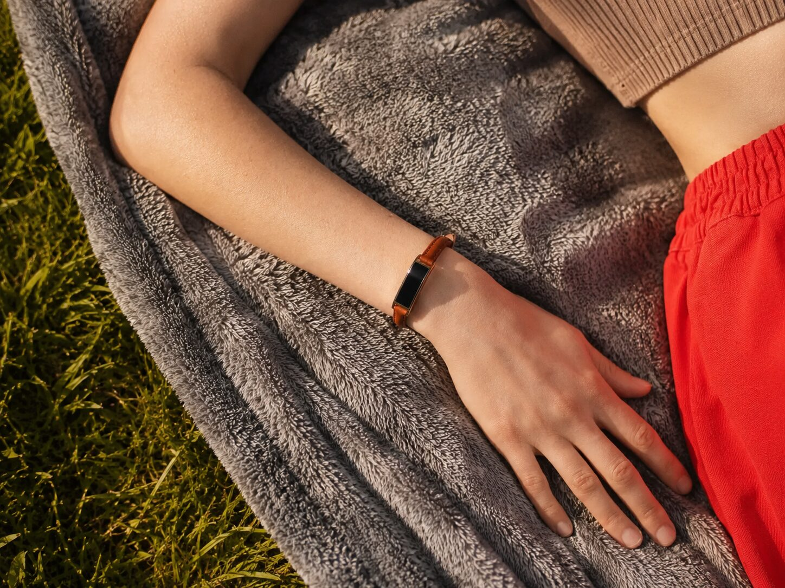

Sleep Trackers for Side Sleepers: Less Bulk in Bed
If you sleep with an arm under your pillow, a bulky watch can press into your wrist.
Your usual sleeping position matters
A tracker can feel fine at a desk and uncomfortable in bed. Side and stomach sleepers often tuck a hand under a cheek or pillow. That puts pressure on the case, band or clasp in a way standing up never does.

Before choosing a sleep tracker, think about where your wrist actually goes at night. The thickness and shape of the device can matter as much as its weight.
Try the fit lying down
Put your arm where you normally sleep. Bend your wrist. Notice whether the case presses into your skin, whether the clasp sits under a pressure point and whether the band catches on bedding.
The fit should keep the sensor in contact without squeezing. Loosening a band until the device slides around may feel better briefly, but can make sensor contact less consistent. Our band-tightness guide covers the balance.
Where Ray fits
Ray is a seven-gram, screenless device worn on a band. It records sleep alongside heart rate, HRV, temperature trends, activity and light exposure, with results in the companion app. The device weight excludes the band, so consider the complete combination you will wear.
There is no wrist display to check when you turn over. Its small form is a reason to consider it if bulk is why you take a watch off at bedtime. Comfort is personal, though: a low weight cannot guarantee that every band or sleeping position will suit you.
Keep charging out of bedtime
Ray uses daylight to replenish its battery. That lets you reserve the night for wearing it rather than putting it on a charger. Ordinary bedroom lighting is not enough to sustain it; the panel needs appropriate daylight exposure during the day. Read the light requirements.
Start with the nights you can actually record
The first question is whether you can comfortably keep the tracker on. Then you can look at your sleep patterns in the app. If you find yourself removing it, note the specific cause: pressure, texture, warmth or movement. Adjust the band or placement on your wrist rather than forcing yourself to tolerate a poor fit.
A small, screenless tracker for the hours when comfort matters most.
See Ray and its bands Ask a question